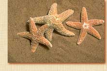
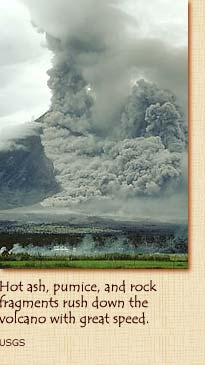
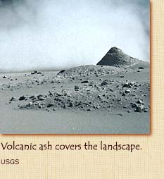

|
Roamin':
Your uncle soon had another purpose for traveling across the bay,
didn't he?
Pliny: Yes, before he left, my uncle's quest for knowledge
turned into a rescue mission, which he undertook with a heroic turn
of mind. He received a message from a lady named Rectina, who was
trapped by the eruption in her villa at the foot of the mountain.
She begged him to save her, saying that the sea was her only possible
escape route. My uncle ordered the launching of large galleys, upon
one of which he sailed, with the intention of saving as many residents
as possible of the villas that stand extremely thick upon that beautiful
coast.
Roamin':
What happened after your uncle left?
Pliny: I finished my composition, bathed, dined, and went
to bed. But during the night, the tremors grew so strong that my
mother and I decided to leave the house and sit on the courtyard
near the shore, where I resumed my studies.
Roamin':
Staying calm during an earthquake - that took real courage!
Pliny: I don't know whether to call it courage - or foolhardiness.
By sunrise, buildings were shaking, and my mother and I decided
to flee Misenum. We were swept along in a mob of panicked townspeople
until we had traveled a safe distance from any buildings.
 The
ground rocked under our feet. The shore grew considerably wider
than normal, as though the sea had been sucked back, and held many
sea animals captive on the dry sand.
A black and dreadful cloud appeared, yawning open again and again
to reveal long fantastic flames that writhed like snakes and resembled
huge flashes of lightning. But despite these terrors we didn't want
to go any farther from Misenum until we had word of my uncle.
Roamin':
But something changed your mind? What was it?
 Pliny:
The cloud descended
upon the earth and covered the sea. It hid Misenum's promontory.
My mother began to beseech, to exhort, to command me to escape as
best I might. She feared her age and large size would slow me down
if I waited for her. She said she would willingly die rather than
be the cause of my death.
Roamin':
What did you do?
Pliny: I told her I would not be saved without her. I took
her hand, and we hurried on. I looked back, and saw a gross darkness
rolling toward us like a flood,
about to envelop us. We left the road to avoid being knocked down
and trampled in the approaching blackness. We had scarcely sat down
when a darkness descended, not like a moonless or cloudy night,
but like a closed room with no lamplight.
Roamin':
It sounds like a nightmare!
Pliny: I thought the world was ending. Women shrieked. Children
cried. Men screamed and shouted. People desperately tried to find
their children, their parents, their wives or husbands. You could
identify others only by their voices. Some people were so terrified,
they prayed to die. At last we saw a light. Unhappily, it was not
the return of day but the warning of approaching fire.
Roamin':
Then you reached safety?
 Pliny:
No. The darkness came again, along with a heavy shower of ashes.
We were obliged every now and then to rise and shake them off. Otherwise
we should have been buried and even crushed under their weight.
At last the dreadful darkness thinned out and became no more than
a cloud or fog. Finally the sun shone, though with the pale glow
it has after an eclipse. We could now see that ashes covered everything
around us, like after a heavy snowfall. We returned to Misenum,
where we remained even though the earth continued to quake, for
we were desperate for news of my uncle.
To read the exciting conclusion of this interview, click on Pliny's
Fate.
To return to the main menu, click on Vesuvius
Blows Its Top.
|